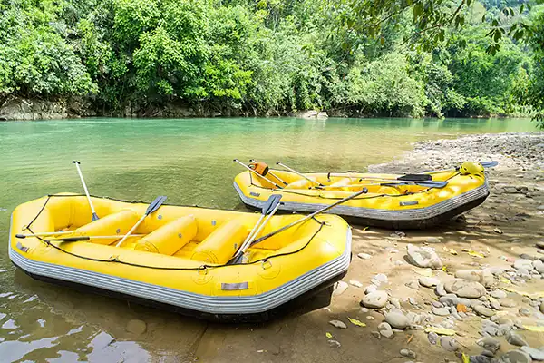

White Water Rafting was founded in the obscure county of
Loremipsum
Idaho, which
rested along the Adipiscing River. It was founded by
Fugaids Vouptatem, along with Alicam Undi and Carson Cannon. We founded this
organization so people could enjoy the river . Thus the seed was born.

From
there we advertized and it became very popular. We
continued to expanded our business as we hired a variety of people so we could
handle logistical problems, including dealing with patching bottleneck and
expand our business for less. Operating a business has taught us the importance
of good planning.